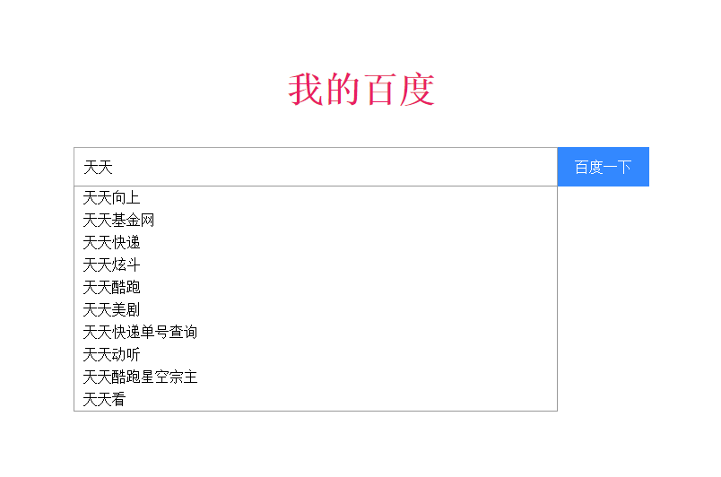
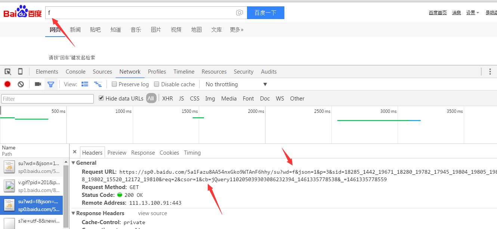

概述
前几天介绍了JSONP为何物，今天我们就要用JSONP来做一下百度搜索功能，废话不说，先上个图过过瘾。

如上图，实现了百度搜索功能，接下来我们就来分析分析这个东西怎么做，如果还不知道JSONP是什么。请点击我的另一篇文章 跨域和JSONP ,另外本文还涉及到一个JSONP发送请求的方法，点击 JSONP的请求封装方法 查看。
- 查看百度搜索栏JSONP的接口
打开百度页面，我们在搜索栏输入aa字母，如下图所示

从发送的请求中我们可以获得服务器的地址为https://sp0.baidu.com/5a1Fazu8AA54nxGko9WTAnF6hhy/su，JSONP的函数名为cp。
这样我们就可以进行调用百度搜索栏的API接口，直接附上代码：
/*引入jsonp.js模块*/
<script src="js/jsonp.js"></script>
<script type="text/javascript">
window.onload = function() {
var text = document.getElementById('text');
var btn = document.getElementById('btn');
var oUl = document.getElementsByTagName('ul')[0];
text.onkeyup = function() {
oUl.style.display = "block";
var value = text.value;
if(value) {
jsonp('https://gsp0.baidu.com/5a1Fazu8AA54nxGko9WTAnF6hhy/su', //服务器地址
{wd: value}, //发送的数据
'cb', //百度服务器JSONP提供的接口名
function(data){ //回调函数
var list = data.s; //数据存储在属性s中
var fragement = document.createDocumentFragment();
oUl.innerHTML = "";
for(var str in list) {
var li = document.createElement('li');
li.innerHTML = list[str];
fragement.appendChild(li);
}
oUl.appendChild(fragement);
});
}else {
oUl.style.display = "none";
}
}
btn.onclick = function() {
var value = text.value;
if(value) {
window.open('http://www.baidu.com/s?word=' + encodeURIComponent(value), '_blank');
}
}
oUl.onclick = function (e) {
e = e || window.event;
var target = e.target || e.srcElement;
window.open('http://www.baidu.com/s?word=' + encodeURIComponent(target.innerHTML), '_blank');
};
}
</script>
如上所示，代码就这些，就可以实现百度搜索功能模块的，如果要阅读整个完整的demo程序，请到我的github地址 https://github.com/CanFoo/Protect_Demo/tree/master/JSONP_Baidu_Serach 下载源码。